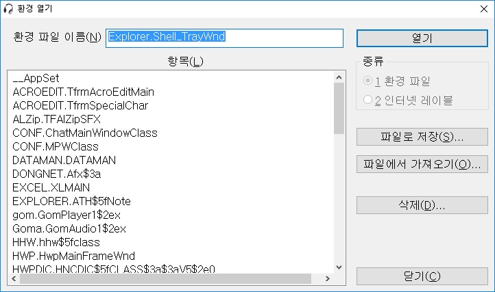
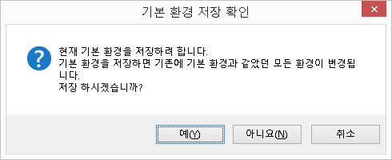
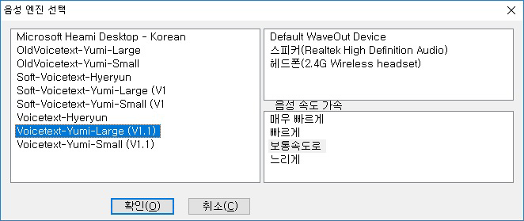
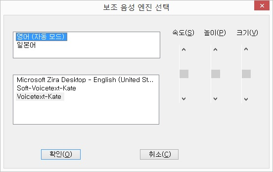
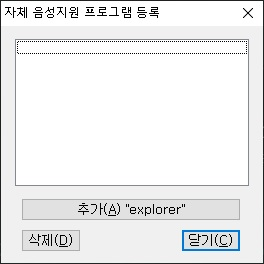
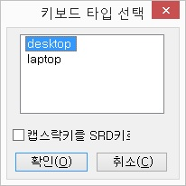
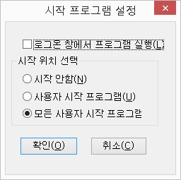
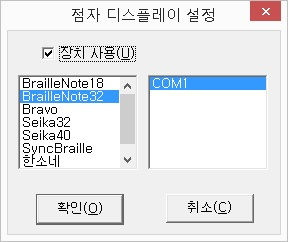
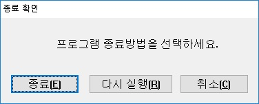

Ⅶ-1. 일반
- Ⅶ-1-1. 환경 열기
- Ⅶ-1-2. 기본 환경 열기
- Ⅶ-1-3. 환경 저장
- Ⅶ-1-4. 환경 다른이름으로 저장
- Ⅶ-1-5. 현재 환경 재설정
- Ⅶ-1-6. 환경 초기화
- Ⅶ-1-7. 환경 관리
- Ⅶ-1-8. 음성 엔진 선택
- Ⅶ-1-9. 보조 음성 엔진 선택
- Ⅶ-1-10. 자체 음성지원 프로그램 등록
- Ⅶ-1-11. 넘락 오프로 실행
- Ⅶ-1-12. 실행시 시스템 음소거 해제
- Ⅶ-1-13. 키보드 타입 선택
- Ⅶ-1-14. 터치스크린 지원
- Ⅶ-1-15. 시작 프로그램 등록
- Ⅶ-1-16. 환경 자동 로드
- Ⅶ-1-17. 비디오 디바이스 모드
- Ⅶ-1-18. 점자 디스플레이 설정
- Ⅶ-1-19. 종료
Ⅶ-1-1. 환경 열기

[환경 열기] 메뉴는 센스리더의 환경을 사용자가 수동으로 열 때 사용하는 기능입니다.
[환경 열기] 메뉴를 실행하거나 단축키인 <Ctrl-Alt-Shift-O> 키를 누르면 '환경 열기' 대화상자가 출력됩니다. 파일이름 편집창에 환경이름을
직접 입력하거나, 목록에서 해당하는 환경을 선택한 후 '확인' 버튼을 누르면 환경이 열립니다.
기본환경설정 파일을 열기 위해서는 파일이름 편집창에 'xvsrd'라고 입력한 뒤 '확인' 버튼을 누르면 됩니다.
또한 각각의 환경 또는 전체 환경을 파일로 내보내거나 파일에서 가져오기로 환경을 불러올 수 있으며 특정 환경에 대해서는 삭제를 할 수 있습니다.
특정 환경이나 전체 환경을 파일로 내보낼 경우 파일 확장자는 <ZIP> 파일 형식으로 저장되며, 생성된 파일로 효율적인 환경 관리가 가능 합니다.
Ⅶ-1-2. 기본 환경 열기
센스리더의 'XVSRD' 기본 환경을 간편하게 열어주는 메뉴입니다.
센스리더를 처음 설치한 이후, 전체적인 음성의 속도나 크기를 일괄적으로 변경하고 싶다면 기본 환경을 먼저 열고 음성 설정 기능을 통해 사용자가 원하는 설정값으로 변경해 주어야 합니다.
[기본 환경 열기] 메뉴를 실행하거나 단축키인 <Ctrl-Alt-Shift-B>키를 누르면 기본 환경이 열립니다.
단 기본 환경을 열어도 별도의 대화상자가 나타나지 않으며 음성으로 기본 환경이 열렸음을 안내합니다.
Ⅶ-1-3. 환경 저장
현재 선택된 환경설정 파일을 저장하는 메뉴이며, 기능키는 <Ctrl-Alt-Shift-S> 키입니다.
현재 선택된 환경설정 파일은 센스리더 프로그램 창의 상태표시줄에 표시됩니다. 따라서 센스리더의 기능 중 상태표시줄 읽기 기능(Ctrl-Shift-S)을 실행하면 손쉽게 현재 환경 설정을 확인할 수 있습니다.
환경설정 파일의 저장 위치는 [일반] 메뉴의 [사용자별 환경 사용] 메뉴의 사용 여부에 따라 달라지게 됩니다.
만일, 윈도 XP를 사용하면서 센스리더를 기본 경로로 설치했다면 '%appdata%'의 '\XVision\Sense Reader\settings' 경로에 환경 설정 파일이 저장됩니다.
기본 환경이 열린 상태에서 [환경 저장] 기능을 실행하면 기본 환경의 저장 여부를 다시 한 번 확인하게 됩니다. 이 때, '예' 버튼을 누르면 모든 환경에 설정값이 적용되고,
'아니오' 버튼이나 '취소' 버튼을 누르면 기본 환경 저장이 취소됩니다. 기본 환경이 열리지 않은 상태에서는 곧바로 현재 환경이 저장됩니다.

* 기본 환경을 열고 설정을 변경한 후 환경을 저장하는 경우, 변경하기 전 기본 환경과 설정값이 같은 일반 환경 파일의 설정값은 모두
일괄적으로 기본 환경과 동일하게 변경됩니다.
Ⅶ-1-4. 환경 다른이름으로 저장

현재 열려진 환경을 사용자가 원하는 이름으로 변경해서 저장하는
기능입니다.
이 기능을 실행하여 저장된 환경설정 파일은 해당 프로그램 실행시 자동으로 로드되지 않으며 [환경 열기] 메뉴를
사용해 사용자가 수동으로 열어야 적용됩니다.
파일 이름을 'xvsrd'로 지정했을 경우는 기본 환경 파일로 저장이 되며, 한번 더 저장할 것인지 확인 과정을
거칩니다.
기능키는 <CTRL-ALT-SHIFT-A>입니다.
또한 각각의 환경 또는 전체 환경을 파일로 내보내거나 파일에서 가져오기로 환경을 불러올 수 있으며 특정 환경에 대해서는 삭제를 할 수 있습니다.
특정 환경이나 전체 환경을 파일로 내보낼 경우 파일 확장자는 <ZIP> 파일 형식으로 저장되며, 생성된 파일로 효율적인 환경 관리가 가능 합니다.
Ⅶ-1-5. 현재 환경 재설정
현재 실행되고 있는 응용 프로그램의 센스리더 환경을 다시 로드합니다.
'현재 환경 재설정' 기능은 해당하는 환경이 없을 경우 센스리더의 기본 환경을 로드합니다.
이 기능은 다른 환경을 사용중인 상태에서 원래의 환경으로 되돌리고자 하는 경우에도 사용할 수 있으며, 기능키는 <Insert-E>입니다.
Ⅶ-1-6. 환경 초기화
환경 초기화는 사용자의 부주의나 오류 등 기타 원인으로 센스리더의 환경에 문제가 생긴 경우, 센스리더를 처음 설치했을 때의 상태로 환경을 복원하는 기능입니다.
센스리더의 환경을 초기상태로 복원할 때 사용자가 변경했거나 추가한 환경은 모두 손실됨으로 심각한 문제가 발생한 경우가 아니라면 이 기능의 사용은 신중한 것이 좋습니다.
'환경 초기화' 기능은 사용자의 실수에 대비하여 환경 초기화 여부를 확인하는 대화상자를 출력합니다. 대화상자에서 '예' 버튼을 누르면 환경이 초기화됩니다.

'환경 초기화'가 진행중일 경우 별도의 비프음이 출력되며, 초기화가 완료되면 '센스리더 프로그램 창'이 자동으로 사라집니다.
Ⅶ-1-7. 환경 관리
환경 관리 기능은 기존에 설정되어 있는 프로그램별 환경이나 인터넷레이블을 별도의 파일로 저장하거나 불러오는 기능 입니다.
해당 기능은 기존에 사용하던 환경을 파일로 백업하여 다른 사용자와 공유하거나 프로그램 재설치시 간편하게 기존 환경으로 복원하실 수 있습니다.
항목(Alt-L) : 종류영역에서 선택된 값의 목록이 표시되는 항목으로 <Ctrl-Space bar>, <Shift-Space bar>키를 활용하여 여러 항목을 선택하실 수 있습니다.
파일로 저장(Alt-S) : 항목영역에서 선택된 항목을 파일로 저장합니다.
파일에서 가져오기(Alt-O) : 저장된 환경파일을 센스리더에 적용합니다.
삭제(Alt-D) : 항목영역에서 선택된 항목을 제거합니다.
폴더열기(Alt-O) : 수동으로 환경을 관리할 수 있도록 환경파일이 저장된 폴더가 열립니다.
* 파일로 저장된 환경은 종류의 분류에 따라 반영됩니다.
예를 들어 인터넷레이블 파일은 종류가 환경파일로 설정된 경우 불러오실 수 없습니다.

Ⅶ-1-8. 음성 엔진 선택
음성출력을 위해 사용할 음성합성기 혹은 TTS엔진을 선택하는 메뉴입니다.
현재 센스리더에서는 기본으로 VOICE WARE 사의 TTS엔진을 지원하고 있습니다. 센스리더 초기 설치시는 Yumi-Large 엔진으로 동작하게 되며, 만약 저사양 컴퓨터에서 반응속도를 개선하고자 한다면 Yumi-Small 엔진으로 변경해 주면 됩니다.
'음성 엔진 선택' 대화상자는 음성엔진 목록과 사운드카드 목록, 음성 속도 가속 목록으로 이루어져 있으며 다음의 과정에 따라 음성엔진을 변경할 수 있습니다.
① <Ctrl-\> 키를 눌러 센스리더 윈도우를 엽니다.
② [일반] -> [음성 엔진 선택] 메뉴를 실행합니다.

③ '음성엔진선택' 대화상자가 열리면 위/아래 방향키를 눌러 원하는 음성엔진을 선택합니다.
④ <Tab> 키를 눌러 음성엔진 출력을 위한 사운드카드 목록으로 이동합니다.
시스템에 사운드 카드를 2개 이상 사용하는 경우, 위/아래 방향키를 이용해 음성출력에 이용할 사운드 카드를 선택할 수 있습니다.
사운드카드를 하나만 사용한다면 <tab> 키를 눌러 다음 컨트롤로 이동합니다.
⑤<Tab> 키를 눌러 음성 속도 가속 목록으로 이동하여 위, 아래 방향키를 이용하여 원하는 속도로 조절할 수 있습니다.
기본 값은 보통 속도이며 보통의 속도 4단계는 느리게의 속도 8단계 값과 동일 합니다.
※ 센스리더 음성 엔진과 같은 기계식 TTS음성에 익숙하지 않은 사용자 분들이 빠르게 또는 매우 빠르게를 선택시 출력 음성을 인지할 수 없으니 참고하시기 바랍니다.
⑥ '확인' 버튼을 눌러 설정된 값을 적용합니다.
* 음성엔진 변경 후에는 별도의 환경 저장이 필요하지 않습니다.
Ⅶ-1-9. 보조 음성 엔진 선택
언어별 보조 음성 엔진의 선택과 자동모드 설정 그리고 보조 음성 엔진의 속도, 높이, 크기 등을 지정합니다.
보조 음성 엔진은 외국어를 보다 정확하게 듣기 위해 사용되는 음성엔진으로 보조음성앤진 항목에서 영어 또는 일본어 음성앤진을 선택하거나, Microsoft Speech API 4.x / 5.x 규격의 음성엔진을 설치해서 이용합니다. (윈도우즈
운영체제는 'Microsoft Sam'과 같은 기본 음성엔진이 내장되어 있어 이를 활용할 수도 있습니다.)
'보조 음성 엔진 선택'대화상자의 구성은 다음과 같습니다.

1. 언어 선택 목록상자
현재 컴퓨터에서 사용할 수 있는 언어 종류가 목록으로 표시됩니다. 외국어 혼용 문장에서 언어에 따라 알맞는 음성엔진이 동작하게 하려면 해당 언어에 커서를 위치한 이후 <Space>
키를 눌러 자동 모드로 선택해 주어야 합니다.
2. 음성엔진 선택 목록상자
언어 선택 목록상자에서 언어를 선택한 이후 <tab> 키를 눌러 음성 엔진 목록으로 이동하면 현재 컴퓨터에서 사용할 수 있는 음성엔진이 목록으로 표시됩니다. 사용을
원하는 음성 엔진을 방향키를 이용하여 선택합니다.
3. 속도, 높이, 크기 설정 스크롤바
음성엔진을 선택한 다음 <Tab> 키를 누르면 속도, 높이, 크기 등을 설정할 수 있는 스크롤바로 이동합니다. 방향키를 사용하여 사용자가 원하는 값으로 설정합니다.
* 보조 음성엔진 선택 기능에서 지정한 보조 음성은 '보조 음성 엔진 모드 변경' 기능을 사용해 '자동 모드'나 '수동 모드'로 설정해야 동작하게
됩니다. 만약, 보조 음성엔진을 사용하고 싶지 않다면 보조 음성 엔진 모드를 '해제'로 변경합니다.
'보조 음성 엔진 모드 변경' 기능의 단축키는 <Insert-Ctrl-E> 입니다.
참고로, 독서기에서 보조 음성엔진을 이용하려면 독서창의 [설정] -> [음성] -> [보조 음성엔진 선택] 메뉴를 통해 보조 음성엔진
설정을 하고, <Ctrl-E> 키를 눌러 동작 모드를 지정해 주어야 합니다.
Ⅶ-1-10. 자체 음성지원 프로그램 등록

자체 음성지원 프로그램 등록 기능은 소리안과 같은 특정 프로그램이 자체적으로 음성출력을 하는 경우 센스리더와의 중복 음성출력을 방지하기 위한 기능입니다.
자체 음성지원 프로그램으로 등록되면 해당 프로그램 내에서는 센스리더의 기능키에 의한 음성출력 외의 모든 음성출력이 중지됩니다.
자체 음성지원 프로그램 등록 대화상자는 추가한 프로그램 및 환경 목록 상자와 추가, 삭제, 닫기 버튼으로 구성되어 있습니다.
자체 음성지원 프로그램 추가 하기
자체적으로 음성이 지원되는 프로그램 또는 특정 환경에서의 음성 지원을 해제하고자 하는 경우 아래 절차에 따라 등록 할 수 있습니다.
- 등록 하고자하는 프로그램 또는 환경을 실행 합니다.
- 자체 음성지원 프로그램 메뉴를 실행 합니다.
- Tab키를 이용하여 [추가] 버튼으로 이동 후 ENTER키를 눌러 등록을 완료 합니다.
자체 음성지원 프로그램 삭제 하기
추가한 프로그램 또는 환경을 삭제하고자 할 때 아래 절차에 따라 삭제할 수 있습니다.
- 자체 음성지원 프로그램 등록 대화상자를 실행 합니다.
- 목록 상자에서 위, 아래 방향키를 이용하여 삭제를 원하는 프로그램 또는 환경에 포커스 합니다.
- Tab키를 이용하여 [삭제] 버튼으로 이동 후 ENTER키를 눌러 삭제 합니다.
Ⅶ-1-11. 넘락 오프로 실행
센스리더가 실행될 때 자동으로 NUMLOCK 상태를 오프시킬지 여부를 선택하는 메뉴입니다.
센스리더의 읽기포인터는 NUMLOCK이 오프된 상태에서 정상적으로 동작함으로 읽기포인터를 자주 이용하는 사용자라면 이 기능을 선택하고
사용하는 것이 좋습니다.
Ⅶ-1-12. 실행시 시스템 음소거 해제
센스리더가 실행되면 시스템 음소거를 해제하도록 설정하는 기능 입니다.
해당 기능을 설정하면 사용자의 실수나 시스템 오류로 인해 음소거가 되더라도 센스리더가 실행되면서 음소거를 해제합니다.
노트북이나 기능식 키보드를 사용하는 환경에서 잦은 음소거로 불편을 겪는 경우 해당 옵션을 사용하시는 것이 좋습니다.
Ⅶ-1-13. 키보드 타입 선택
기존 캡슬락 키를 SRD키로 사용 메뉴를 대신하여 데스크톱과 렙탑 모드를 전환할 수 있도록 키보드 타입을 선택할 수 있습니다.
데스크톱 모드의 경우 기존에 사용하던 사용키를 그대로 반영하며 렙탑 모드는 노트북과 같이 일반 키보드보다 키수가 작은 키에 적합하도록 기능키를 제정의 하였습니다.

위의 그림과 같이 메뉴를 실행시 "desktop"과 "laptop"메뉴 중 선택할 수 있으며, 상, 하키를 이용하여 선택이 가능 합니다.
탭키를 눌러 나타나는 "해제 캡스락키를 SRD키로 사용"을 스페이스바를 이용하여 선택시 기존 메뉴의 캡슬락 키를 Insert키로 사용할 수 있도록 전환 됩니다.
기존에 사용되던 <Caps Lock>키의 기능은 <Caps Lock>키를 빠르게 두번 눌러줌으로써 사용 가능하며,
설정을 적용시키고자 할 경우 탭키를 눌러 "확인"에서 엔터를 누르거나 "취소"를 눌러 설정을 취소할 수 있습니다.
또한 Laptop모드일 경우 기존 'desktop'모드의 리뷰기능에 대한 키가 제정의 되었으며, 정의된 키값은 랩탑 기능키에서 확인하실 수 있습니다.
Ⅶ-1-14. 터치스크린 지원
센스리더에서 터치 스크린을 활용한 객체 내비게이션 사용 유무를 설정 하는 항목입니다.
저시력 사용자와 같이 확대, 축소와 같은 윈도우에서 기본적으로 제공하는 터치 제스처를 사용하고자 하는 경우 해당 옵션을 해제 합니다.
해당 옵션을 해제하더라도 키보드를 활용한 객체 내비게이션은 사용 가능 하며 환경설정의 기능키 설정 항목에서 터치스크린 지원의 토글 단축키를 등록하여 이용할 수 있습니다.
또한 센스리더에서 지원하는 터치 제스처는 <센스리더 터치 제스처 안내>에서 확인하실 수 있습니다.
Ⅶ-1-15. 시작 프로그램 등록
컴퓨터가 부팅될 때, 센스리더의 자동 실행 여부를 설정하는 기능입니다.
센스리더가 자동으로 실행되도록 설정해 놓으면 윈도우 부팅시 나타나는 로그온 창이나 하드웨어 설치 마법사 등의 메세지를 확인하여 필요한 작업을 진행할 수 있습니다.
[시작 프로그램 등록] 메뉴를 실행하면 '시작 프로그램 설정' 대화상자가 나타나며, 다음의 세부 옵션을 조정합니다.

1. 로그온 창에서 프로그램 실행 체크상자
다중 사용자가 사용하는 컴퓨터의 경우 윈도우즈 시작시 로그온 창이 나타나게 됩니다. 이 체크상자를 선택하면 로그온 창의 사용자 계정 정보를 확인하고 로그인을 할 수 있습니다.
2. 시작 위치 선택
윈도우즈에 등록된 사용자에 따라 시작 유형을 선택합니다. <위/아래 화살표> 키로 세 가지 옵션 중 한 가지를 선택합니다.
- 시작 안함 : 윈도우즈 시작시 센스리더를 실행하지 않습니다.
- 사용자 시작 프로그램 : 현재 로그인된 사용자 계정에서만 센스리더를 자동 실행합니다.
- 모든 사용자 시작 프로그램 : 로그인 하는 모든 사용자 계정에서 센스리더를 자동 실행합니다.
Ⅶ-1-16. 환경 자동 로드
응용 프로그램을 실행할 때, 각 프로그램에 해당하는 센스리더의 일반 환경설정 파일을 자동으로 불러올 지를 설정합니다.
설정 방법은 [일반] 메뉴의 [환경 자동 로드] 메뉴에서 <Enter> 키를 눌러 선택과 해제를 토글합니다.
자동로드가 해제되어 있을 경우 수동으로 환경을 열어야 하는 불편이 있고, 사용자가 모든 응용프로그램의 환경을 각각 수동으로 열어줘야 하기 때문에
일반적으로는 선택을 하고 사용하는 것이 좋습니다.
Ⅶ-1-17. 비디오 디바이스 모드
비디오 디바이스 모드를 사용할지 여부를 선택합니다. 선택과 해제는 [비디오 디바이스 모드] 메뉴항목에서 <Enter> 키를 누르면 선택과 해제를 토글할 수 있으며, 단축키는 <Ctrl-Alt-Shift-V>입니다.
비디오 디바이스 모드는 화면상의 정보를 보다 정확하게 처리하기 위한 모드이며, 읽기포인터 사용시 화면정보가 누락되는 현상이 발생할 경우 비디오 디바이스모드를 선택하면 해결할 수 있습니다.
* 라이브 메신저 원격제어나 프린터 등의 작업에서 경우에 따라 이 모드를 사용하면 시스템 충돌 현상이 발생할 가능성이 있습니다. 이런 경우 작업을
시작하기 전 이 모드를 해제하고, 작업이 끝나면 다시
모드를 선택해서 사용하시기 바라며 윈도우 8이상 OS에서는 비디오 디바이스 모드가 무의미하여 이용이 불가능하도록 비활성화 하였습니다.
Ⅶ-1-18. 점자 디스플레이 설정
센스리더는 음성출력 뿐 아니라 점자 디스플레이 장치를 통해서도 윈도우의 내용을 출력합니다.
센스리더에서 지원하는 점자 디스플레이 장치를 소유한 경우, 그 장치를 컴퓨터에 연결하면 음성과 더불어 점자로 내용을 확인하며 컴퓨터를 사용할 수 있습니다.
{{1. 점자 디스플레이 장치 설정}}
① [일반] 메뉴의 [점자 디스플레이 설정] 메뉴를 실행하면
'점자 디스플레이 설정' 대화상자가 나타납니다.

② 처음 포커스된 '장치 사용' 체크박스에서 점자 디스플레이 장치를 사용할지 여부를 선택합니다. 기본은 선택되어 있습니다.
③ <Tab>키를 누르면 점자 디스플레이 장치 목록상자가 나타납니다. 위/아래 방향키를 이용해 사용할 장치에 포커스를 맞춥니다.
④ <Tab>키를 눌러서 연결 방식을 선택합니다. USB나 컴포트 번호 중 반드시 실제 장치가 연결될 방식을 선택해야 합니다.
⑤ '확인' 버튼을 눌러 설정을 적용합니다.
센스리더에서 장치 사용 설정을 마쳤다면 이제 장치를
연결하여 사용할 수 있습니다. 이 때, 점자 디스플레이 장치가 컴퓨터와의 연결을 위한 설정을 따로 가지고 있는 경우에는
장치에서의 설정도 해 주어야 합니다.
여기에서는 BrailleNote를 예로 들어 설명드립니다.
{{2. BrailleNote의 연결 설정}}
① BrailleNote의 COM 포트와 컴퓨터의 COM 포트를 케이블로 연결합니다.
② 센스리더에서 점자 디스플레이 설정을 합니다.
③ BrailleNote의 주메뉴에서 [스크린리더 연결] 메뉴를
실행합니다.
④ 연결 방식에 따라 '시리얼 케이블'과 '블루투스'를 선택하고 <Enter> 키를 누릅니다. 점자 디스플레이 장치가 정상적으로 연결되었다면
'스크린리더와 연결됐습니다'라는 메시지가 출력됩니다.
⑤ 센스리더를 동작할 때 출력되는 음성이 점자 디스플레이 장치에 출력되는지 확인합니다.
이 때, BrailleNote에 정확한 정보가 표시되지 않는다면 센스리더를 종료한 후 다시 실행하거나, [점자] 메뉴의 [점자 디스플레이
초기화] 메뉴를 한 번 실행해 줍니다.
{{3. 점자디스플레이 장치 목록}}
현재 센스리더에서 지원하는 점자 디스플레이 장치는 아래와 같습니다.
BrailleNote16
BrailleNote32
bravo (브라보XP)
seika32 (드림브레일)
seika40
SyncBraille
한소네
한소네 LX
한소네 포켓
한소네 U2
Ⅶ-1-19. 종료
센스리더를 종료하는 메뉴이며, 단축키는 <Insert-F4>입니다.
사용자가 실수로 종료시키는 것을 막기 위해 '종료 확인' 대화상자를 출력하여 종료 여부를 한 번 더 묻게 됩니다.

'종료확인' 대화상자에서 '종료' 버튼을 누르면 센스리더가 종료되며, '다시 실행' 버튼을 누르면 센스리더가 종료 되었다가 다시 실행 됩니다.